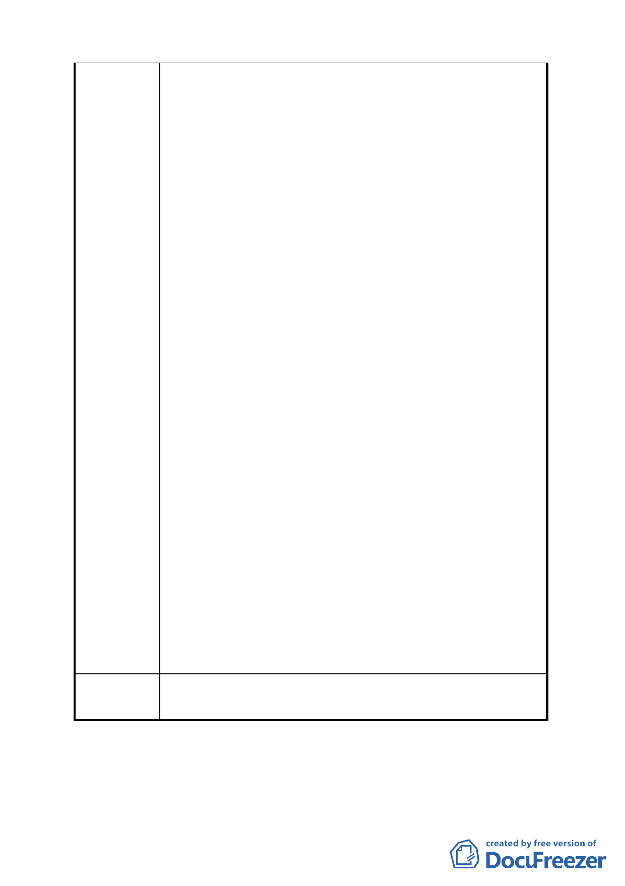

委員會議
決議
三、溫泉及水資源供應量是否充足:
（一）溫泉區旅館之開放，尚需考慮溫泉供應量是否穩定充
足，如果溫泉區旅館過多，溫泉供應量不足，將會造
成業者惡性競爭，損及消費者權益，形成社會問題，
亦或造成溫泉開發過度、地層下陷等問題。北投一帶
都是地熱式的氣水混合溫泉，目前地熱資源已趨飽
和，時有時無，日本習性旅館僅設置大眾湯，房間內
不供應溫泉，溫泉資源使用受到保護，台灣習性房間
內使用需供應溫泉，加上市場競爭，溫泉旅館房間溫
泉池設計愈來愈大，依目前統計，住宿房間、計時湯
屋及大眾湯三者，以 2 人 1 間計算，每人平均耗用掉
的溫泉量比率為 4.5:2:1，所以溫泉旅館的開放，需考
量是否有充足的溫泉資源。
（二）北投一帶都是地熱式的氣水混合溫泉，須引入大量地
表水資源才能製造溫泉，旅館開放，政府須撥出大量
水資源用以製造溫泉，請考慮是否有充足水資源供
應。
四、是否造成市場過度供量，形成惡性競爭: 目前全台已有
超過 410 家溫泉產業(96 年統計，95 年為 510 家)，市
場競爭激烈，台北市區域內溫泉區尚有多家大、中型及
許多小型溫泉旅館要在 2-3 年新增超過 500 間以上溫泉
房間，需考慮開放是否會形成惡性競爭，讓更多業者血
本無歸。
五、是否需符合交通流量評估: 旅館業會引入大量長時滯納
車潮及人潮，開放需考慮是否能有相關交通疏導條件。
六、是否符合地區特色之原則: 本市現有三大溫泉區，已是
全台最多，現有經營更有各自定位特色不重複，維持良
性之競爭，開放需考慮是否造成同質性過高，使市場更
加混亂。
同編號 4。
討論事項 三
案名：變更臺北市文山區木柵路一段中興山莊附近地區主要計
16